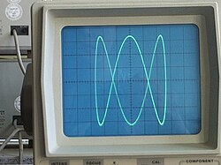

Audio Physics
Oscilloscope Music Visualizer

Overview
This project transforms stereo audio signals into complex geometric shapes and vector graphics using an oscilloscope in X-Y mode. It visualizes the direct relationship between left and right audio channels, creating "Lissajous figures" that turn audio physics into visible art.
The Technology
The setup is minimalist yet powerful, requiring only an audio source and an oscilloscope. The Left channel controls horizontal beam deflection (X-axis) and the Right channel controls vertical deflection (Y-axis). This "vector synthesis" achieves zero-latency visualization by relying purely on voltage physics.